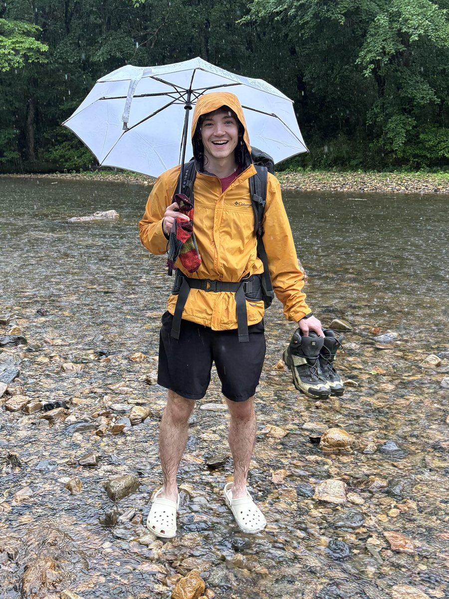

Hi, I'm Darren Fisher
I build web apps with ASP.NET Core, TypeScript, and React at Inalab. Before that I worked as a quant building ETL pipelines to automate energy market analytics... finance bro heaven.
I love the outdoors, hiking, rock climbing, coffee (literally a tech bro), finance (literally a finance bro), and cool art in video games.
I'm in an infinite loop of projects ranging from a chemical plant project risk management app, to a new StarCraft 2 video game using the Unity engine, to a custom CRM for my friend who has a gardening business... wild
Let's chat! on LinkedIn
p.s. AI vibe coding stole the color purple... purple is like top 3 colors so i use it